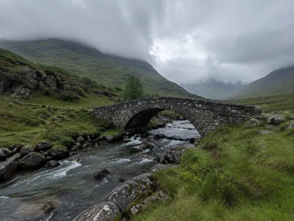
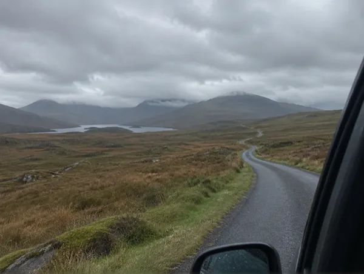
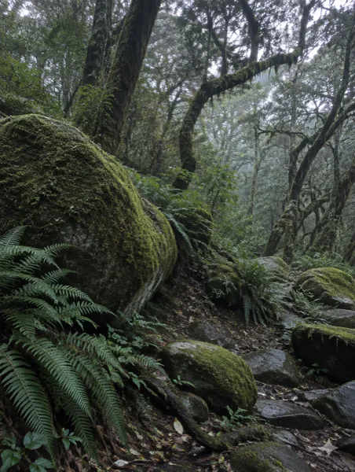
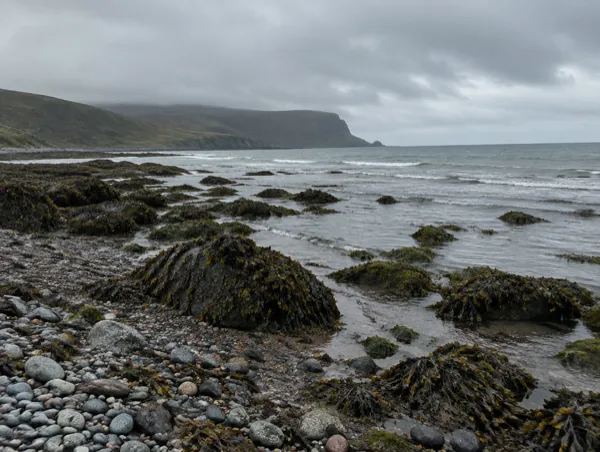
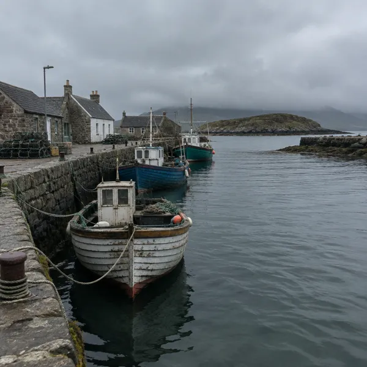
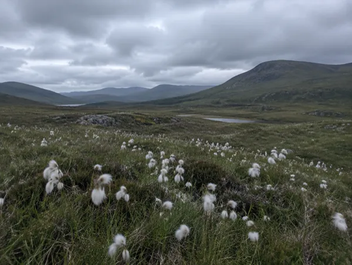
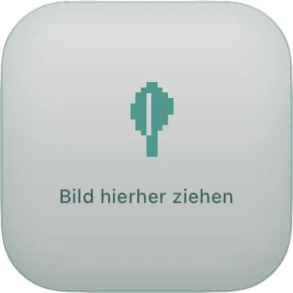
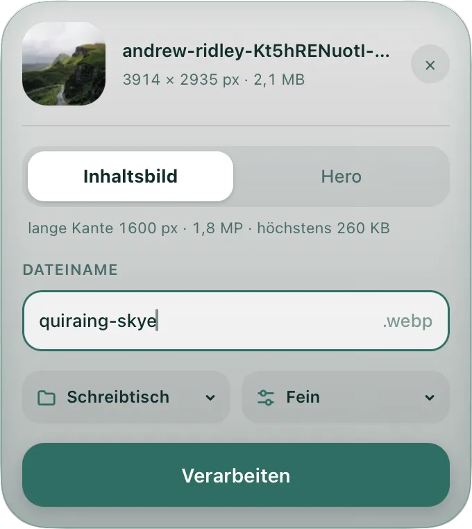
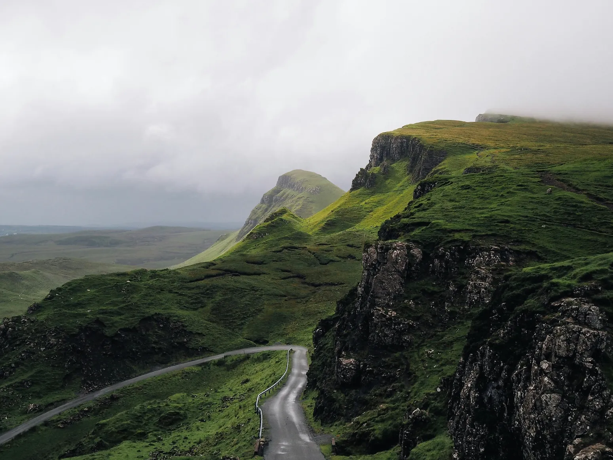
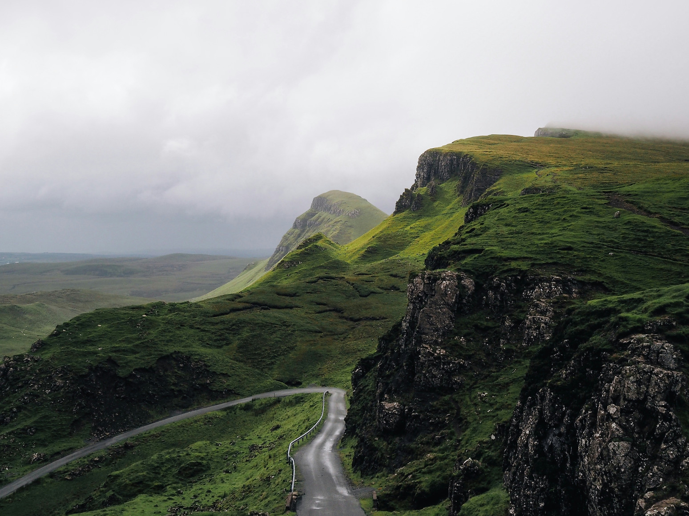

Bilder, web-fertig.
Preen komprimiert Bilder für Websites und wandelt sie in WebP um. Bild hineinziehen, Namen tippen, fertig. Auf dem eigenen Mac, ohne Upload und ohne Konto.
Bilder wiegen am meisten
Auf Startseiten sind Bilder der größte Posten im Seitengewicht, Videos nicht mitgerechnet.
-
Ein Foto, 2.093 KB
Nimm das Foto vom Seitenanfang, die Straße im Quiraing auf der Isle of Skye, als unbearbeitete Originaldatei. Das sind 2,1 MB.
-
Schwerer als alle Bilder einer Startseite
Im Median laden Startseiten mit Bildern 900 KB Bilder aufs Handy, am Desktop 1.054 KB. Das eine Foto wiegt mehr als doppelt so viel wie alle Handy-Bilder zusammen.
-
Wie lange das Foto braucht
Bei 73 % der mobilen Seiten ist das größte sichtbare Element ein Bild. Wann es erscheint, misst Google als Largest Contentful Paint (LCP). Gut sind höchstens 2,5 Sekunden, und Google empfiehlt gute Werte für die Suche.
Gemessen auf einer Testseite mit nur dem Skye-Foto, Handy simuliert: Mit dem Original erscheint das Foto nach 11,1 Sekunden, Lighthouse-Leistung 75 von 100. Mit Preen nach 2,0 Sekunden, Leistung 99. Ein Laborwert, keine echten Besuche.
-
Mit Preen: 215 KB
Preen macht Bilder nur so groß, wie die Seite sie braucht. Aus dem Skye-Foto werden 215 KB, rund ein Zehntel des Originals. Ein Beispiel, kein Durchschnitt.
Einen guten LCP garantiert Preen allein nicht, dafür zählen auch Server, CSS und JavaScript.
Quellen: web.dev (LCP); Google Search Central (Core Web Vitals, Stand 10.12.2025); Web Almanac 2024, Kapitel Page Weight und Performance (Median, Oktober 2024). Skye-Foto: Originaldatei 2.092.819 Byte, gemessen am 02.10.2026. Leistung und LCP: eigene Messung am 02.10.2026 mit Lighthouse 12.8.2 (das Werkzeug hinter PageSpeed Insights), Handy simuliert, gedrosseltes mobiles Netz, Testseite mit nur dem Skye-Foto, 5 Läufe mit gleichem Ergebnis. Ein Beispiel, kein Durchschnitt. Wertung nach web.dev: gut bis 2,5 s, schlecht über 4 s.
Ein Foto vom Handy hat etwa 4000×3000 px und mehrere MB.
Preen macht daraus mit dem Preset „Inhaltsbild“ höchstens 1600 px und 260 KB als Grenze.






Obergrenze statt Qualitätsregler
Du gibst vor, wie groß die Datei höchstens sein darf, zum Beispiel 260 KB. Preen probiert Qualität 80 und sucht sonst die höchste Stufe zwischen 60 und 80, die noch darunter passt.
So läuft es in Preen: Mit Wahltaste, Befehlstaste und P holst du das Panel nach vorn. Du ziehst ein Bild, mehrere oder einen Ordner hinein und tippst den Namen. Dann wählst du ein Preset oder unter „Fein“ eine eigene Obergrenze und klickst „Verarbeiten“. Im Beispiel wird das Skye‑Foto zu 215 KB aus 2,1 MB, 83 % der Obergrenze von 260 KB.


Aus 2,1 MB werden 215 KB
Ein Beispiel, kein Durchschnitt: das Skye‑Foto vom Anfang der Seite, mit dem Preset „Inhaltsbild“. Schieb die Trennlinie und such den Unterschied.


Fragen
Wie groß werden meine Bilder?
Das legt das Preset fest. „Inhaltsbild“: höchstens 1600 px an der langen Kante, 1,8 Megapixel (MP) und 260 KB. „Hero“: höchstens 2400 px, 3,5 MP und 500 KB. Unter „Fein“ stellst du eine eigene Obergrenze ein.
Warum ist mein Bild schmaler als 1600 px?
Aus zwei Gründen. Preen misst die lange Kante, bei einem Hochformat ist das die Höhe. Und Preen deckelt die Megapixel: Das Skye-Foto wird 1549 statt 1600 px breit, weil 1549 × 1162 px schon 1,8 MP sind. Ohne beides hätte ein Hochformat mit 2400 px Breite 7,7 MP, mehr als doppelt so viele wie ein 16:9-Bild gleicher Breite.
Was passiert, wenn ein Bild nicht unter die Obergrenze passt?
Unter Qualität 60 geht Preen nicht. Passt das Bild auch bei 60 nicht, verkleinert Preen es höchstens dreimal um je 10 %. Reicht das nicht, schreibt Preen die Datei trotzdem und sagt dir im Panel, dass sie zu groß ist. Lieber ehrlich zu groß als still zu klein.
Welche Formate gehen hinein, welche kommen heraus?
Hinein gehen JPG, PNG, WebP, HEIC und TIFF, einzeln, mehrere oder als ganzer Ordner. Heraus kommt immer WebP. Ein Fehler bei einem Bild stoppt den Stapel nicht.
Werden meine Bilder hochgeladen?
Nein. Preen arbeitet nur auf deinem Mac, ohne Hochladen und ohne Konto. Internet braucht es dafür nicht. Deine Dateien überschreibt Preen nicht.
Auf welchen Macs läuft Preen?
Auf Macs mit Apple Silicon, macOS 11 oder neuer. Beim ersten Start blockiert macOS die App, weil sie nicht von Apple signiert ist. Die Freigabe steht unter Erster Start.
Was kostet Preen?
Nichts. Der Quellcode steht unter der MIT-Lizenz auf GitHub.
Preen laden. Ohne Upload, ohne Konto, immer WebP, kostenlos.
Preen läuft nur auf Macs mit Apple Silicon. Öffne diese Seite dort, um Preen zu laden.
Erster Start
Preen läuft auf Macs mit Apple Silicon ab macOS 11. Die App ist nicht von Apple signiert, deshalb blockiert macOS sie beim ersten Start (Gatekeeper). So installierst du sie und gibst sie frei:
Preen.dmg öffnen und Preen.app in den Ordner Programme ziehen.
Das Terminal öffnen (Programme › Dienstprogramme › Terminal), diesen Befehl einfügen und Return drücken:
xattr -cr /Applications/Preen.appDer Befehl entfernt nur die Quarantäne-Markierung, die macOS an heruntergeladene Dateien hängt. Du brauchst ihn einmal. Der Pfad /Applications ist der Ordner Programme. Der Quellcode liegt offen auf GitHub (MIT-Lizenz).
Preen im Ordner Programme öffnen. Das Federsymbol erscheint in der Menüleiste.